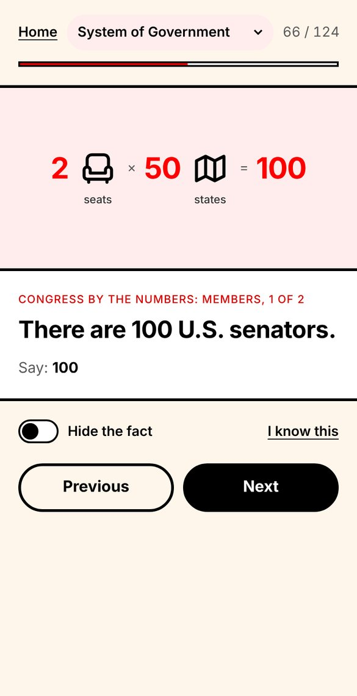
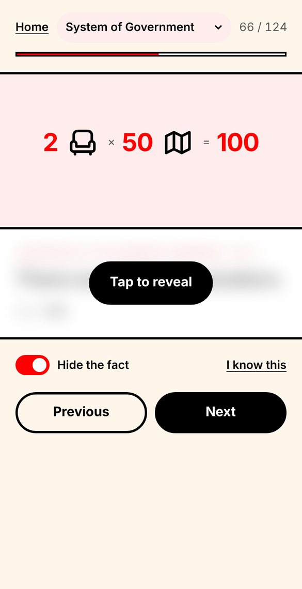
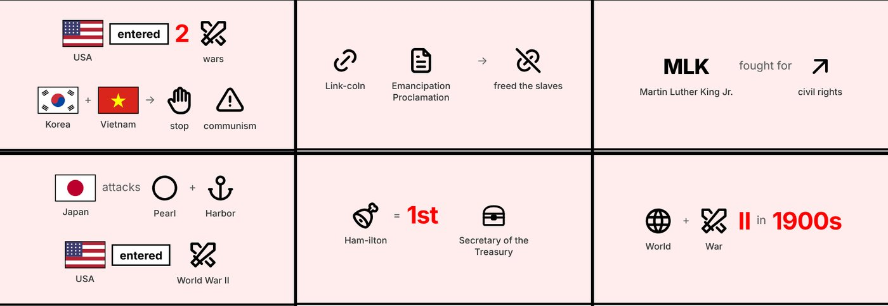

Personal build
Turning a static government question list into a study system.
I became a U.S. citizen in 2024. To prepare for the civics test, I built my own way of memorizing it, then shared the method with a few colleagues preparing for their own interviews.
Turning that method into an app was a challenge I set myself, to learn the build process from end to end. The official study material is a flat list: 128 questions on the current test, many with several accepted answers. I rebuilt it as structured data with explicit rules, then directed AI tools to turn it into an interactive study app.



By the numbers
- 128 questions, 124 cards. Four pairs of official questions share the same answer, so each pair is taught once.
- 279 accepted answers became 111 taught facts in the curated data: 60% less to memorize, with every alternative kept on record.
- 65 questions accept more than one answer. Each was resolved with a scored, documented choice.
- 121 of 124 cards carry an icon row that spells out the answer. The other three keep a clue that already worked: a song, a word pattern and a translation.
The challenge
Existing prep tools copy the official format: question, a list of accepted answers, a quiz. That asks people to memorize more than they need to, ties recall to one wording of each question, and treats 128 items as unrelated even when many share a person, a number or a pattern. The problem was the format, not the content.
Choices and trade-offs
Audience
Fluent English speakers who know mainstream Western pop culture, including long-term immigrants from English-speaking countries. Narrowing the audience let the memory hooks be specific instead of generic; ESL learners are a later version, not an afterthought.
Positioning
Serious learning for unserious people: exact content, playful hooks. Accuracy is protected by keeping the fact and the hook in separate layers.
Interaction
A book you reread, with self-testing as an option rather than the default. Quiz-first was built, tested against how people actually study, and replaced.
Success measure
Coming back voluntarily, not self-reported pass rates, which are too unreliable to collect.
The system
Every stage has an explicit rule, so it gives the same result whether I apply it or an AI tool does.
Facts, not questions
Each page states one fact. Several official question wordings link to the same fact, so it can be recalled however it's asked.
One answer each
Where USCIS accepts several answers, each option is scored on distinctiveness, how easy it is to picture, brevity and hook potential. One is taught; the rest stay on record. Every choice is checked against the whole set, which caught a duplicate a section-by-section review missed.
Grouping
Facts that share a person are learned as a set (five facts whose answer is "the President"). Facts that are easy to confuse sit side by side, capped at a few per group so the card never becomes the overload it's meant to fix.
Icon clues
Every icon stands for a word in the answer, so the row reads like a rebus. The test for every card: could you rebuild the answer from the icons alone?
Trust
The plain fact and the memory hook are separate layers, so the hook can be playful without risking accuracy. Officeholder answers carry an asterisk and a note to check them before an interview. Facts about sensitive history get plain, literal icons with no wordplay.
One fact, start to finish
- Official: "How many U.S. senators are there?" Answer: "One hundred (100)."
- Restate: "There are 100 U.S. senators."
- Check: "Two senators per state" already exists elsewhere, so the cards link instead of teaching 100 as an isolated number.
- Group: paired with 435 House members, two numbers about the same institution.
- Icon clue: 2 seats × 50 states = 100. The icons derive the answer, so it never has to be memorized raw.
- Study: hide the text, say the fact from the icons, tap to check.
Directing AI
I owned the audience, the rules, the answer choices and the quality bar. AI tools handled the volume: drafting at scale, writing code, drawing icons. Where it broke was more instructive than where it worked.
Wrong product
The first build was a well-made quiz, which was the wrong product. I hadn't stated how it would be used, so the tool defaulted to the standard for the category. I defined the interaction model and rebuilt it as a book you reread.
Vague direction
Asked for icons, the tool produced topic labels: one scroll stood in for 18 different facts. I rewrote the direction as a rule anyone can test and redrew the full set against it.
Quality gates
Checks against the whole set, not one section at a time; every card rendered and reviewed on a phone before publishing; and a plain statement of anything that couldn't be verified.
Refining the rules
Once every card was built, I went through the app as a learner and logged what didn't trigger recall. The fixes weren't one-off tweaks. Each became a rule applied across the whole set, so the system got stricter rather than messier.
People
A generic person icon tells you nothing. Every person now gets a clue to their name: a chain link for Link-coln, a ham for Ham-ilton, a washing machine for Wash-ington, or the name people actually use, like FDR and MLK.
Countries
Swords say "war," not which country, and the country is usually the answer. Countries are now flags, and war-entry facts read as two-line stories: USA entered two wars, Korea and Vietnam, to stop communism.
Meanings
A symbol keeps one meaning everywhere. An up-and-right arrow always means rights; a broken chain always means freedom; a globe always means Secretary of State.

How I'd measure it
If this were taken further, these are the signals I'd use to judge whether the system works:
- Return: do people come back on their own, on three or more separate days before their interview?
- Hook strength: which facts keep getting re-revealed? Those hooks are weak and get reworked first.
- Rebus test: with the text hidden, can someone new to the material say the fact from the icons?
- Accuracy: zero errors against the official list, and time-sensitive answers updated within a week of any change.
The result is a complete study app: all 128 questions on 124 cards, each pairing a plain, defensible fact with an icon clue that spells out the answer, built on rules precise enough to apply the same way every time.
With AI, the leverage is in the spec and the quality gates, not the prompt. The valuable work was writing rules precise enough to apply the same way 128 times, and checks that catch what looks right but isn't.